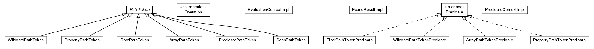

JavaScript is disabled on your browser.
Overview
Package
Class
Tree
Deprecated
Index
Help
Prev Package
Next Package
Frames
No Frames
All Classes
Package net.trajano.doxdb.jsonpath.internal.token

Interface Summary
Interface
Description
ScanPathToken.Predicate
Class Summary
Class
Description
ArrayPathToken
EvaluationContextImpl
PathToken
PredicateContextImpl
PredicatePathToken
PropertyPathToken
RootPathToken
ScanPathToken
ScanPathToken.ArrayPathTokenPredicate
ScanPathToken.FilterPathTokenPredicate
ScanPathToken.PropertyPathTokenPredicate
ScanPathToken.WildcardPathTokenPredicate
WildcardPathToken
Enum Summary
Enum
Description
ArrayPathToken.Operation
Overview
Package
Class
Tree
Deprecated
Index
Help
Prev Package
Next Package
Frames
No Frames
All Classes